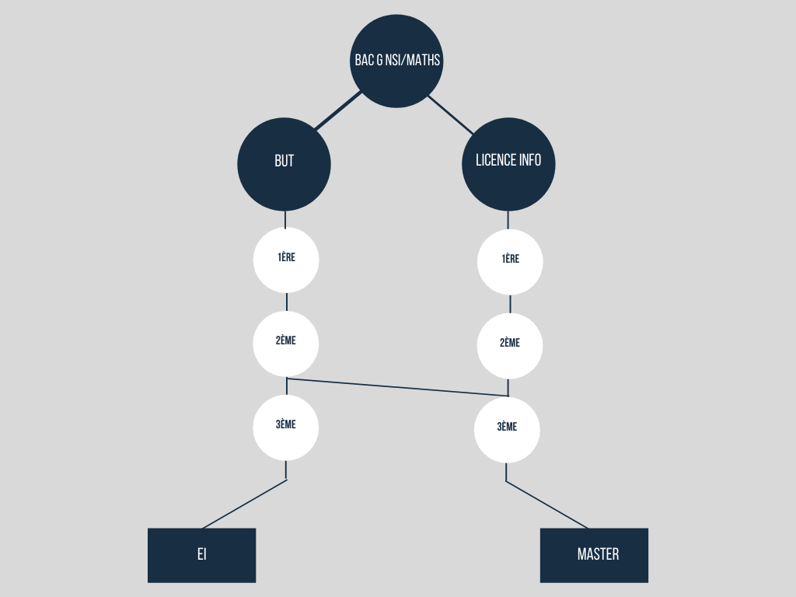

Grand Oral NSI
Démarches
Interrogations
Changement de ciblage
Galères
Sources
Conclusion
Ce grand oral permet :
Découvrir de nouvelles choses
Engranger de nouvelles connaissances
Améliorer sa capacité à chercher par soi-même
Lien avec mon parcours d’étude :

Schéma de mon potentiel parcours
FIN